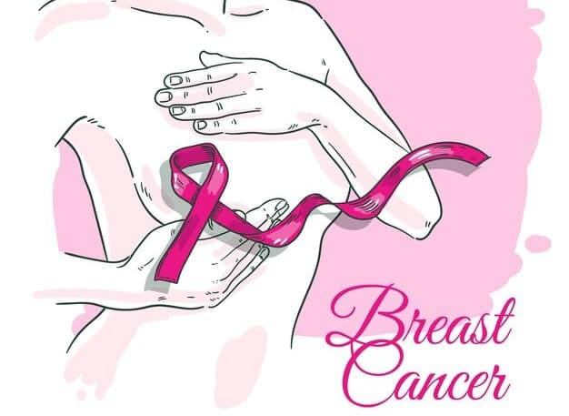

Informasi Kesehatan Perempuan
Kanker payudara terjadi karena pertumbuhan sel abnormal pada jaringan payudara. Kenali gejalanya, pahami risikonya, dan lakukan deteksi dini. Semakin cepat dikenali, semakin besar peluang untuk ditangani.

01. Profil Penyakit
Mengenal lebih dekat penyakit kanker payudara.
Kanker payudara adalah penyakit yang terjadi akibat pertumbuhan sel abnormal pada jaringan payudara secara tidak terkendali dan dapat menyebar ke bagian tubuh lainnya.
Merupakan salah satu jenis kanker yang paling banyak terjadi pada perempuan. Penyakit ini juga dapat dialami oleh laki-laki.
Ditandai dengan pertumbuhan sel abnormal, munculnya benjolan, perubahan bentuk payudara, serta kemungkinan penyebaran ke organ lain.
Risiko meningkat seiring bertambahnya usia, terutama pada perempuan yang memiliki riwayat keluarga atau faktor genetik tertentu.
02. Gejala
Kenali tanda dan gejala kanker payudara sejak dini.
Muncul benjolan pada payudara atau ketiak. Sering terasa keras dan tidak selalu menimbulkan rasa sakit.
Terjadi perubahan ukuran, bentuk, atau kondisi salah satu payudara.
Puting tertarik ke dalam atau keluar cairan tidak normal, terutama cairan bercampur darah.
Kulit kemerahan, penebalan, atau tampak seperti kulit jeruk.
Luka sulit sembuh, pembengkakan ketiak, dan benjolan semakin membesar.
Jika menyebar, dapat muncul nyeri tulang, sesak napas, atau penurunan berat badan.
03. Penyebab & Faktor Risiko
Ketahui faktor yang dapat meningkatkan risiko kanker payudara.
Mutasi DNA pada sel payudara menyebabkan sel tumbuh dan membelah secara tidak terkendali.
Memiliki anggota keluarga dekat yang pernah mengalami kanker payudara dapat meningkatkan risiko.
Mutasi gen tertentu, seperti BRCA1 dan BRCA2, dapat meningkatkan kemungkinan terjadinya kanker payudara.
Risiko kanker payudara meningkat seiring bertambahnya usia.
Kelebihan berat badan, terutama setelah menopause, dapat meningkatkan risiko.
Kurangnya aktivitas fisik, merokok, dan konsumsi alkohol dapat meningkatkan risiko.
04. Pencegahan
Langkah sederhana untuk menjaga kesehatan payudara.
Pemeriksaan Payudara Sendiri setiap bulan untuk mengenali perubahan pada payudara.
Pemeriksaan payudara klinis oleh tenaga kesehatan untuk mendeteksi kelainan.
Gizi seimbang, terutama sayuran dan buah-buahan.
Olahraga teratur dan jaga berat badan tetap sehat.
Menghindari kebiasaan merokok dan konsumsi minuman beralkohol.
Jaga waktu istirahat dan kelola stres untuk mendukung kesehatan tubuh.
Klik tombol di bawah kalau kamu sudah periksa bulan ini.
05. Penanganan
Pemeriksaan dan pengobatan kanker payudara.
Dokter memeriksa kondisi payudara dan ketiak untuk mengetahui adanya benjolan atau perubahan.
Menggunakan gelombang suara untuk melihat kondisi jaringan payudara dan membantu menilai benjolan.
Pemeriksaan menggunakan sinar-X untuk mendeteksi kelainan pada jaringan payudara.
Menggunakan medan magnet untuk mendapatkan gambaran jaringan payudara secara lebih detail.
Pengambilan sampel jaringan payudara untuk diperiksa di laboratorium guna memastikan diagnosis kanker.
Dokter menentukan jenis dan stadium kanker berdasarkan hasil pemeriksaan yang telah dilakukan.
Pengobatan dipilih dokter sesuai jenis kanker, stadium, dan kondisi pasien.
Mengangkat jaringan yang terkena kanker atau seluruh payudara sesuai kondisi pasien.
Menggunakan obat-obatan untuk membunuh atau menghambat pertumbuhan sel kanker.
Menggunakan radiasi untuk menghancurkan sel kanker.
Menghambat pengaruh hormon yang merangsang pertumbuhan sel kanker tertentu.
Menggunakan obat yang menargetkan bagian atau karakteristik tertentu dari sel kanker.
Membantu sistem kekebalan tubuh melawan sel kanker pada jenis kanker tertentu.
06. Konsultasi
Silakan isi formulir untuk mengirim pertanyaan mengenai kanker payudara.
Formulir ini merupakan contoh/demo dan belum terhubung dengan layanan email atau WhatsApp.
Kanker payudara dapat dialami perempuan maupun laki-laki. Benjolan perlu diperiksa tenaga kesehatan. Deteksi dini membantu menemukan perubahan. Diagnosis perlu dipastikan melalui pemeriksaan medis.
Tidak semua benjolan adalah kanker. Namun, setiap benjolan atau perubahan yang tidak biasa perlu diperiksakan ke fasilitas kesehatan.
Puskesmas , Klinik / Dokter Umum , Rumah Sakit , Dokter Spesialis Bedah / Bedah Onkologi
BreastHealth - Informasi Kesehatan
Email: 250205037@mhs.udb.ac.id
WhatsApp: 08xxxxxxxxxx
Boyolali, Jawa Tengah
Website ini menyediakan informasi edukasi kesehatan dan bukan pengganti pemeriksaan maupun konsultasi dokter.
Sumber informasi kesehatan kanker payudara